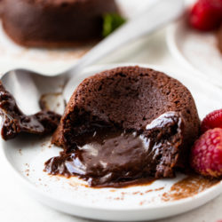

Chocolate Lava Cake

Ingredients
- 4 oz bittersweet chocolate
- 4 oz butter
- 3 large eggs
- 1/2 cup sugar
- 1/4 cup flour
- 1 teaspoon vanilla extract
- cocoa powder
Steps
- Preheat oven to 400°F. Generously butter and dust 5 (4 oz) ramekins with cocoa powder or sugar; set aside.
- In a medium microwave-safe bowl, melt chocolate and butter in 30-second increments.
- In a separate large bowl, whisk the eggs and sugar until pale and fluffy. Whisk in the melted chocolate along with the flour, vanilla, and instant coffee if desired.
- Divide batter into ramekins and place them on a baking sheet. Bake 12 minutes or until the edges begin to pull away from the ramekins but the center is still jiggly.
- Remove from oven and serve immediately with ice cream.